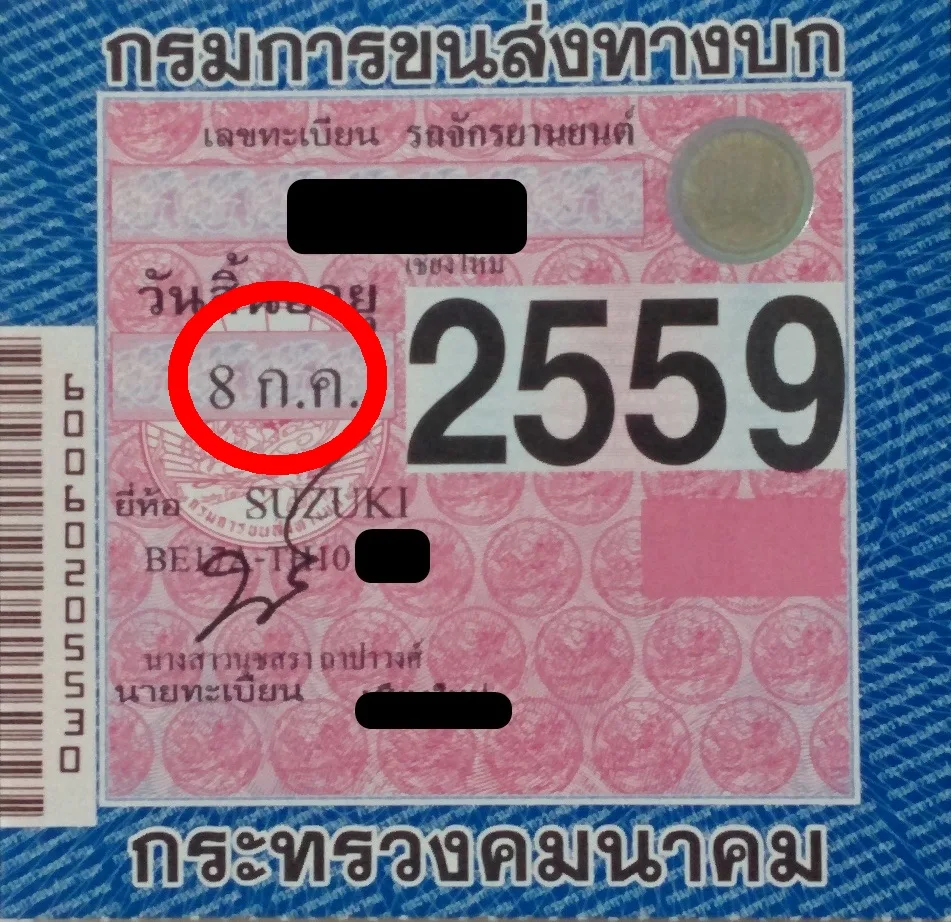
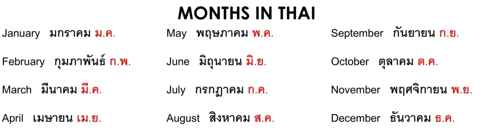

Motorbike Registration Renewal in Chiang Mai
I am trying to make the process of your motorbike registration renewal easier. This is one of the simplest things to do. It requires a couple of short visits to Nat Motors (just opposite Maya and down Huay Kaew towards Doi Suthep) and a little bit of cash and it’s done. It should take up to 30 minutes for the first visit, then one week later just pickup the green book and new sticker.
YOU CAN DO THIS PROCESS UP TO THREE MONTHS BEFORE YOUR REGO EXPIRES!
If your bike is not fully registered, or the registration expire and you have an accident, you will not have any of the basic medical personal injury insurance, which is worth up to 30,000 baht if you have an accident or someone crashes into you. It’s not much, but it’s a start.
Your Motorbike Registration
Each year your motorbike (or car) needs to be registered. No forms necessary. yes you heard me correctly!

Firstly, you have a green book or blue book for a car. These are VERY important. don’t lose them!!!
Look at your motorbike registration label that looks like this. Next to the year 2559 (2016 + 543 Buddhist years) is the month and date. All rego stickers now should be 2560, with 2561 coming out in 2017.
You need to renew on or just before this date(or upto 3 months earlier)!
What’s that? You can’t read Thai, just look for the Thai script and corresponding month. Easy!

Ok, so you have your green book or blue book, your vehicle and expiring rego, and want to sort it out, well there are many around, but Nat Motors is the closest now to Nimman area. It is a repair shop and rego check and renewal place.
Your green book will stay with them and they will tell you to come back in a week. That’s it!
When you come back to collect your new rego sticker, it takes just a couple of minutes, you show your receipt(or picture) and they give you your book and new label. Go home and attach it to your motorbike and come back next year!!!
Motorbike Registration Locations
There are actually many places to get your car or motorbike registration renewed. Just look for this logo. It is usually at like a car repair or garage looking shop.There are many locations around Chiang Mai. I use the Nat Motors near Nimman one because it is close.
Motorbike Registration Process at Nat Motors
Nat Motors are just around the corner from Nimman.
To get there just head along Huay Kaew Road from the Maya intersection. Drive pat the pub and about 200 meters down on the left is Nat Motors, just after a crossing. I am sure you will find it.
Start on the right hand side at the front. There are a few guys who will come to you, show them your green book and they should understand. They will do their forms and get you to sign. Keep the slip.
Enter this area.
They will send you to the motorbike registration girl and she is in this area.
She will take and keep your green book, complete your motorbike registration and insurance and take your money. It is usually around 400-500 baht per year.
Your bike should be checked in this area.
Enter this area and this is where you can wait and pay. Try going up to the girl at the front to check if your bike is finished, if not go to the waiting area.
You can wait inside here here and watch some Thai TV or even use their computers, but I suggest taking your own entertainment.
After 5 minutes, ask again if it is finished. You will need to pay 60 baht for the check and then you can go and get your bike.
DON’T FORGET. Go back a week later and pick up your green book and new sticker from the lady in the middle section again where you dropped everything off.
Chiang Mai Motorbike Registration. Two Day Processing
The main Department of Land and Transport centre for everything motorbike registration and transfer related activities is at the lights at the Holiday Inn in Nong Hoi, but it’s at least 30 minutes from Nimman area. They do everything on the spot, but the process is a little complicated, but a lot quicker, except it involves two trips to the main office, so just go to Nat Motors. I will!
If you have just bought a new motorbike, you can see my Guide to Transferring your Motorcycle Registration.